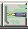

|
Database
button  button opens some rapidly |
Reference | Original Data Download to check for updates | Data Prep |
| Coastlines | Natural Earth | ||
| Holocene & Pleistocene Volcanoes |
Global Volcanism Program, 2013. Volcanoes of the World, v. 4.11.0.
Venzke, E (ed.). Smithsonian Institution. Downloaded 31 Jul 2022.
https://doi.org/10.5479/si.GVP.VOTW4-2013 There is now a version 5: Global Volcanism Program, 2022. [Database] Volcanoes of the World (v. 5.0.0; 1 Nov 2022). Distributed by Smithsonian Institution, compiled by Venzke, E. https://doi.org/10.5479/si.GVP.VOTW5-2022.5.0, which has both a Holocene and Pleistocene (less review and updates) file, and volcnaoes are not duplicated |
https://volcano.si.edu/list_volcano_holocene.cfm | Convert Excel to CSV to DBF. Combine Holocene and Pleistocene, and add a field with AGE |
| USGS Plate Boundaries (line shapefile) | USGS, earthquakes pages (KMZ): https://earthquake.usgs.gov/learn/kml.php | ||
| Plate outlines (area shapefile) |
|
http://geoscience.wisc.edu/~chuck/MORVEL/PltBoundaries.html | Converted a shapefile |
| Continental crust outlines. Can extend significant distances from coastline. | Coffin, M.F., Gahagan, L.M., and Lawver, L.A., 1998, Present-day Plate Boundary Digital Data Compilation. University of Texas Institute for Geophysics Technical Report No. 174, pp. 5. | Plates Project, University of Texas
http://www-udc.ig.utexas.edu/external/plates/data.htm |
|
| Hot spots. | From Plates Project, University of Texas. | ||
| Fracture zones. | Originally from the Global Relief Data on CD-ROM,
no longer available. Another option: http://www.soest.hawaii.edu/PT/GSFML/SF/index.html which has seafloor fabric lineations, including fracture zones, extinct ridges, V-anomalies, discordant zones, and propagating rifts. |
||
| Tsunami |
https://www.ngdc.noaa.gov/hazard/tsu_db.shtml doi:10.7289/V5PN93H7 |
Converted to DBF (shortened many field names) | |
| DSDP/ODP site locations: | ODP site at Texas A&M, Deep Sea Drilling Project Sites: Legs 1-96, Sites 1-624, Ocean Drilling Program: Legs 100-199, Sites 625-1222 ArcView files (through Leg 190; provided by Dr. Sebastian Luning). | ||
| Magnetic anomaly point picks | Seton, M., J. Whittaker, P. Wessel, R. D. Muller, C. DeMets, S. Merkouriev, S. Cande, C. Gaina, G. Eagles, R. Granot, J. Stock, N. Wright, S. Williams, 2014, Community infrastructure and repository for marine magnetic identifications: Geochemistry, Geophysics, Geosystems DOI:10.1002/2013GC005176 | http://www.soest.hawaii.edu/PT/GSFML/ML/index.html | Prep data Use data |
| Global CMT earthquake focal mechanisms: >50,000 earthquakes from 1977 on. This has the focal mechanisms, depth, date, magnitude, and a rough classification of the earthquakes which have very little oblique slip |
|
Global CMT | |
| Marine magnetic anomalies (lines): loads data base with digitized marine magnetic anomalies. | From the Global Relief Data on CD-ROM. | ||
| Time scale Gee and Kent (2007) | |||
| Marine Magnetic Reversal Time Scale | Cande, S.C., and D.V. Kent, 1995, Revised calibration of the geomagnetic polarity timescale for the late Cretaceous and Cenozoic, J. Geophys. Res., vol. 100, pp.6,093-6,095. | ||
| Plate reconstruction total poles |
|
|
|
| Global subduction zone geometries, with dips and depths | Hayes, G. P., D. J. Wald, and R. L. Johnson (2012), Slab1.0: A three?dimensional model of global subduction zone geometries, J. Geophys. Res., 117, B01302, doi: 10.1029/2011JB008524. https://agupubs.onlinelibrary.wiley.com/doi/abs/10.1029/2011JB008524 | https://earthquake.usgs.gov/data/slab/ | convert TXT to DBF, and then to a grid. |
Other Databases.
Last revision 11/28/2022